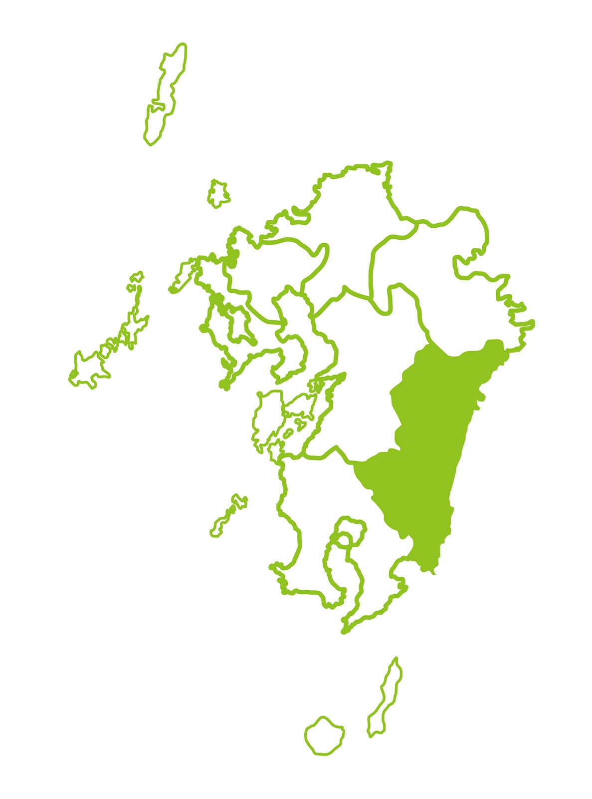
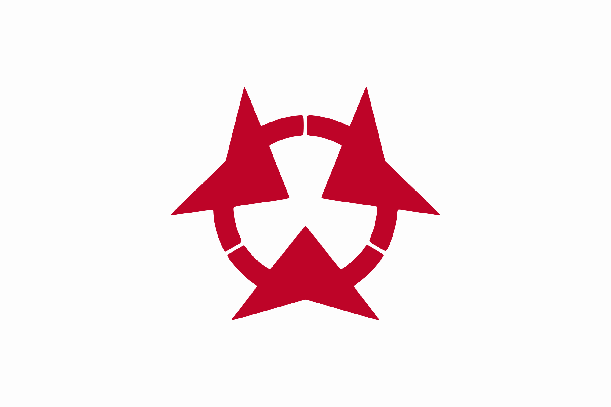
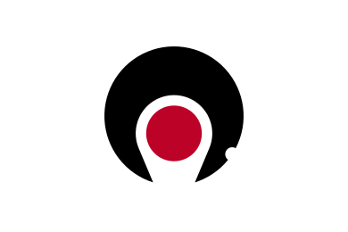
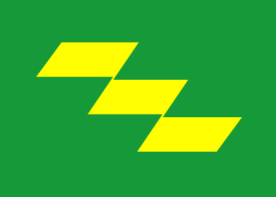

宮崎県(みやざきけん、Miyazaki Prefecture)
概要

- 宮崎
- 日本の九州地方に位置する県。県庁所在地は宮崎市。県木である「フェニックス」に代表される南国情緒豊かな気候から、1960年代には日南地区を中心とした新婚旅行のメッカだった。現在も春季のプロ野球などのキャンプ地として知られる。
- 地理・地形
-
- 面積 7,735.32km2（境界未定部分あり）
- 総人口 1,053,609人（推計人口、2022年6月1日）
- 人口密度 136人/km2
- 隣接都道府県
大分県
熊本県
 鹿児島県
宮崎県旗
宮崎県徽章
- 気候
- 全体的に日照時間・降水量ともに全国で上位で、特にえびの高原、鰐塚山の降水量は日本有数となっている。平野部での降雪・積雪は稀であり、宮崎市の気象台では初雪が観測されない年がある一方、九州山地では積雪する地域があり、日本最南端の天然スキー場もある。夏は季節風の南東風により蒸し暑い状態が続くものの、海風であるためそれほど高温にはならない。むしろ九州山地などを吹き降ろす南西風が多くなる梅雨末期の方が高温である。冬は乾いた西風が卓越し、快晴の日が多い。国内で冬に多照となる地域では最も暖かいこの気候を利用し、スポーツチームのキャンプやゴルフ客が多数訪れる。
おすすめトピック